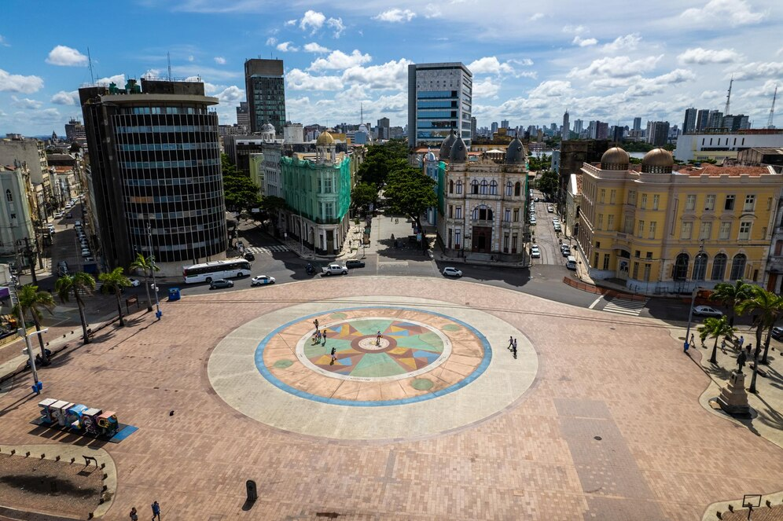

Marco Zero
O coração histórico de Recife

Olinda
A cidade patrimônio mundial pertinho de Recife

Frevo
O ritmo e dança que pulsa no coração de Pernambuco
O coração histórico de Recife
A cidade patrimônio mundial pertinho de Recife
O ritmo e dança que pulsa no coração de Pernambuco

Uma refeição prática e saborosa, geralmente composta por charque desfiado, feijão verde cozido, arroz branco, vinagrete e farofa. Um prato completo que representa a culinária regional.
Saiba mais
Uma sobremesa icônica de Pernambuco, feita de finíssimas camadas de massa enrolada com um recheio generoso de goiabada. Delicado, saboroso e perfeito para acompanhar um café.
Saiba mais
Cremosos e reconfortantes, os caldinhos são uma pedida popular em Recife, com diversas opções como feijão, frutos do mar, mocotó e outros sabores. Ideais para um petisco ou entrada.
Saiba maisUm universo mágico e singular onde arte, arquitetura e natureza se entrelaçam. Descubra as esculturas monumentais e cerâmicas de Francisco Brennand em um complexo de beleza ímpar, um verdadeiro mergulho na imaginação do artista.
Saiba mais
O coração pulsante do Frevo em Recife! Este espaço vibrante celebra e preserva o ritmo e a dança que são Patrimônio Imaterial da Humanidade. Viva a energia contagiante do frevo com exposições, aulas e apresentações ao vivo.
Saiba maisUm museu interativo e emocionante que celebra a cultura e o legado do Sertão nordestino, com destaque para a vida e obra de Luiz Gonzaga, o Rei do Baião. Uma imersão tecnológica e sensorial no universo árido, mas vibrante, da região.
Saiba maisO Carnaval do Recife, maior manifestação cultural da cidade, é reconhecido no Brasil e no mundo por sua diversidade de ritmos e forte presença da cultura popular. Maracatu, caboclinhos, coco-de-roda, ciranda, samba, afoxé e o frevo este último reconhecido como Patrimônio Cultural Imaterial da Humanidade.
Saiba maisA festividade em homenagem ao Santo Antônio, São João e São Pedro, realizada no mês de junho, une o lado religioso com a realização de missas e procissões, com o profano, onde acontecem shows de forró, baião, xaxado e apresentações de quadrilhas juninas.
Saiba maisConhecido por sua riqueza cultural, o Recife conta com a criatividade dos trabalhos de artesãos locais e regionais que transformam madeira, couro, cerâmica, tecidos e fios, por meio das mais diversas técnicas, em verdadeiras obras de arte. Os admiradores de arte sacra, tapetes, rendas, cestaria, confecção, entre outros tipos de trabalho, poderão adquirir essas peças elaboradas por profissionais, cujos trabalhos são reconhecidos nacional e internacionalmente nos seguintes locais:
Saiba mais